Propósito: guiar paso a paso el registro de la Ficha de Formulación POA de su unidad: iniciativas, funcionamiento, otras actividades operativas, actividades propias, inversión y revisión de la Ficha resumen antes de enviarla a la DPDI.
Versión del documento: 1.0 · {{FECHA}}
Soporte funcional: Dirección de Planeamiento y Desarrollo Institucional (DPDI)
Soporte de acceso (claves, conexión): Mesa de ayuda de Tecnologías de la Información
El Sistema POA - DPDI reemplaza el llenado manual del archivo Ficha_Formulacion_POA.xlsx. Cada responsable trabaja
en línea, desde su navegador, sobre la ficha de su unidad orgánica; la DPDI revisa, observa o aprueba las fichas y obtiene la
base consolidada de toda la universidad sin volver a digitar información.
http://NOMBRE-DEL-EQUIPO:8080 durante la
etapa temporal o https://poa.universidad.edu.pe cuando el sistema esté en el servidor institucional.| Rol | Qué puede hacer |
|---|---|
| Responsable de unidad | Registra y modifica la ficha de las unidades que tiene asignadas mientras estén en estado Borrador u Observada, revisa directrices, descarga el libro Excel y el PDF y envía la ficha a revisión. |
| Consulta | Ve todas las unidades y el tablero DPDI en modo de solo lectura y puede descargar reportes. |
| Administrador DPDI | Gestiona parámetros, catálogos, unidades, techos, usuarios; revisa, observa, aprueba o reabre fichas. |
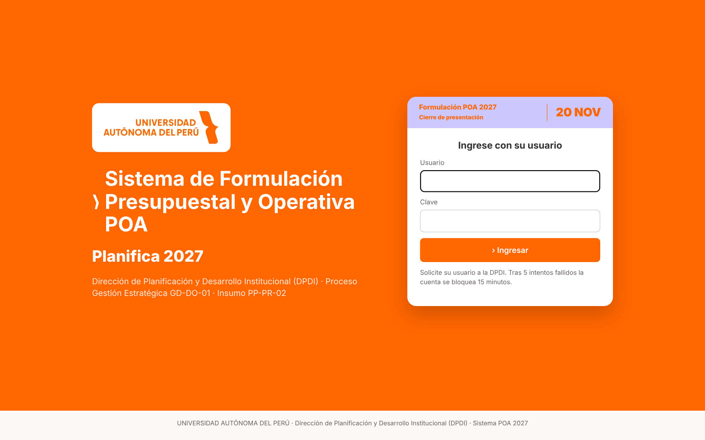
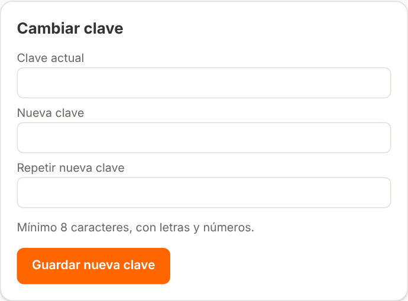
La sesión se cierra sola después de 8 horas. Al terminar, use Salir (esquina superior derecha), sobre todo en equipos compartidos.
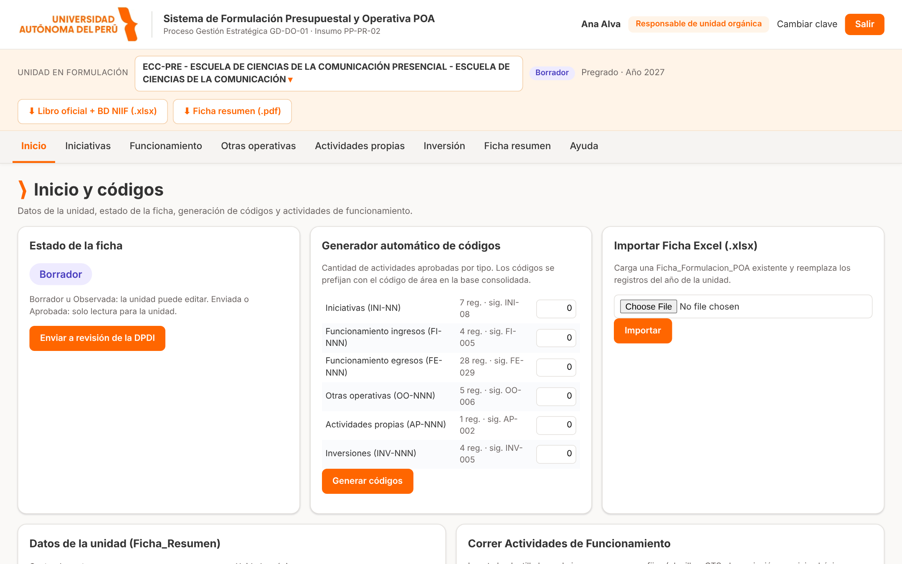
| Zona | Descripción |
|---|---|
| Cabecera blanca | Logo, nombre del sistema, usuario conectado, rol, enlaces «Cambiar clave» y «Salir». |
| Barra de unidad (crema) | Unidad en formulación con el formato Código del área - Centro de costo - Unidad orgánica (por ejemplo 101109 - CENTRO DE INNOVACIÓN - Lima Sur), estado de la ficha, macrogrupo y año. A la derecha, las descargas del libro oficial y de la Ficha resumen. |
| Menú | Inicio, Iniciativas, Funcionamiento, Otras operativas, Actividades propias, Inversión, Ficha resumen y Ayuda. |
| Contenido | Tarjetas, tablas y formularios de la sección elegida. |
Si tiene más de una unidad asignada, pulse sobre el nombre de la unidad en la barra crema. Se abre un buscador: escriba parte del código, del centro de costo o del nombre y elija la unidad. Todas las páginas pasan a mostrar la unidad seleccionada.
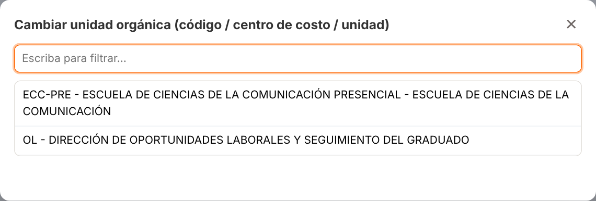
La página Inicio reúne la información general de su unidad:
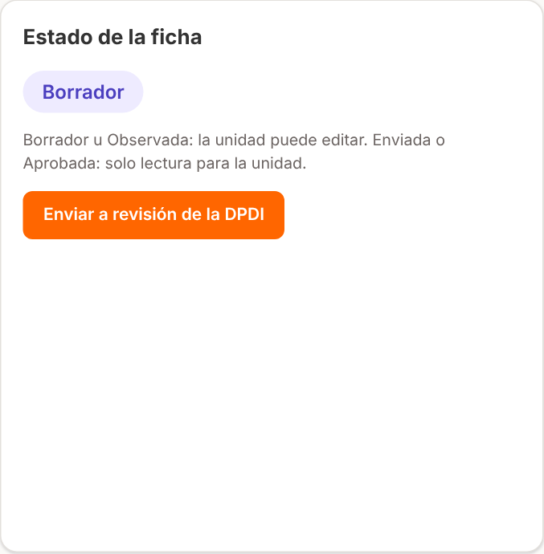
Las iniciativas son las actividades que contribuyen a los objetivos anuales del POA y al Plan Estratégico Institucional (PEI).
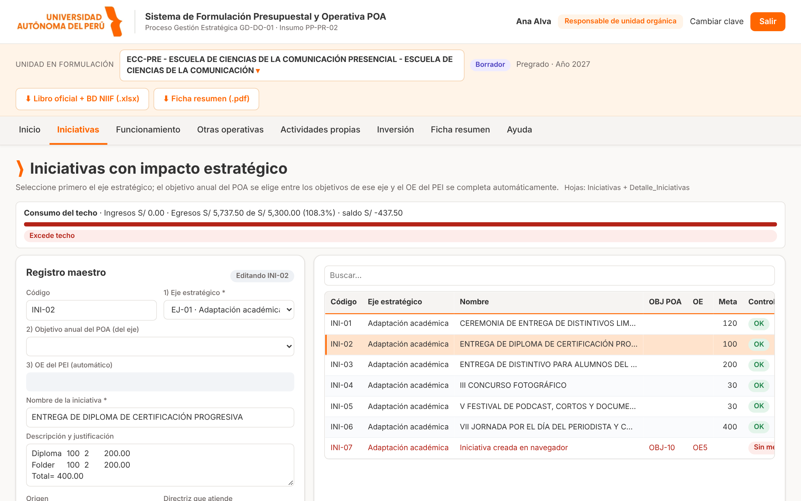
Con la iniciativa seleccionada, en el panel de detalle:
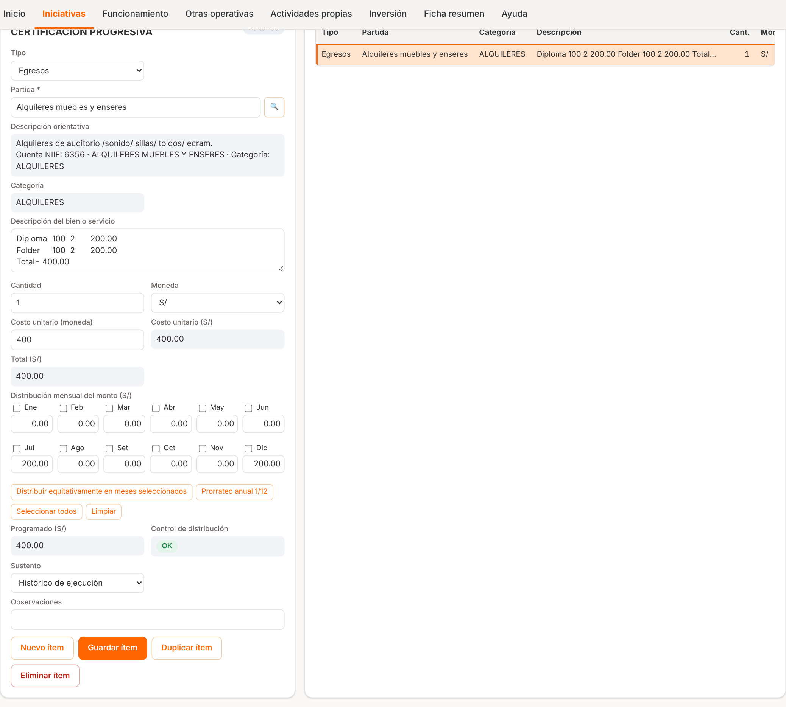
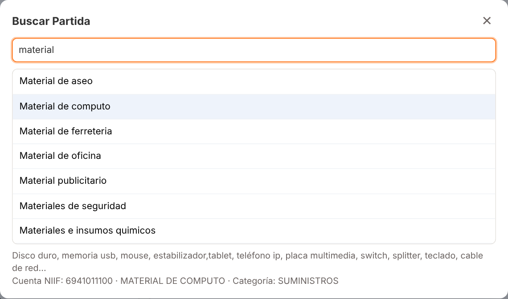
Registra los conceptos permanentes de la unidad. La página tiene dos pestañas:
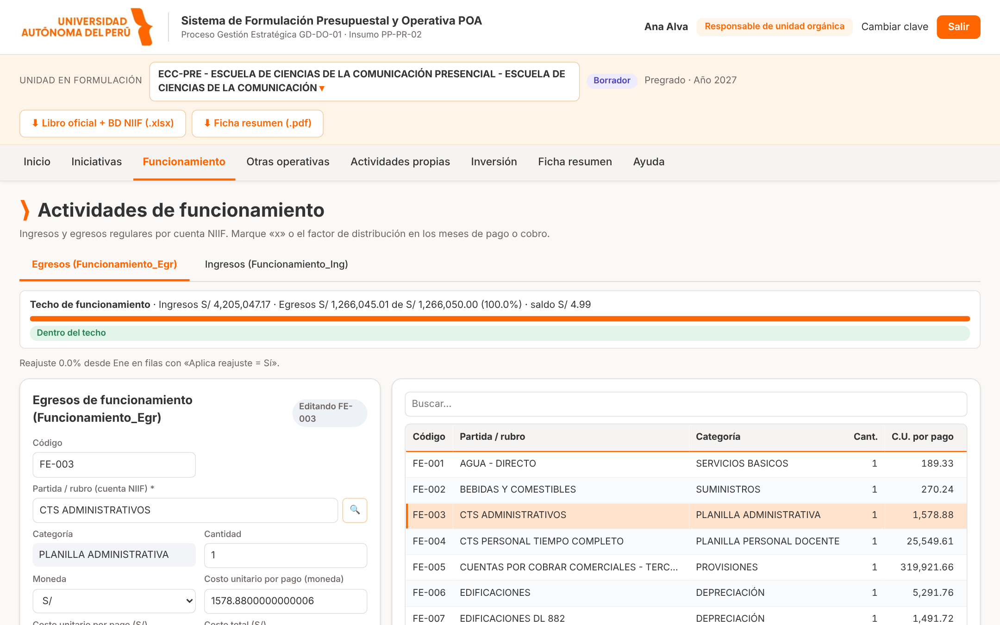
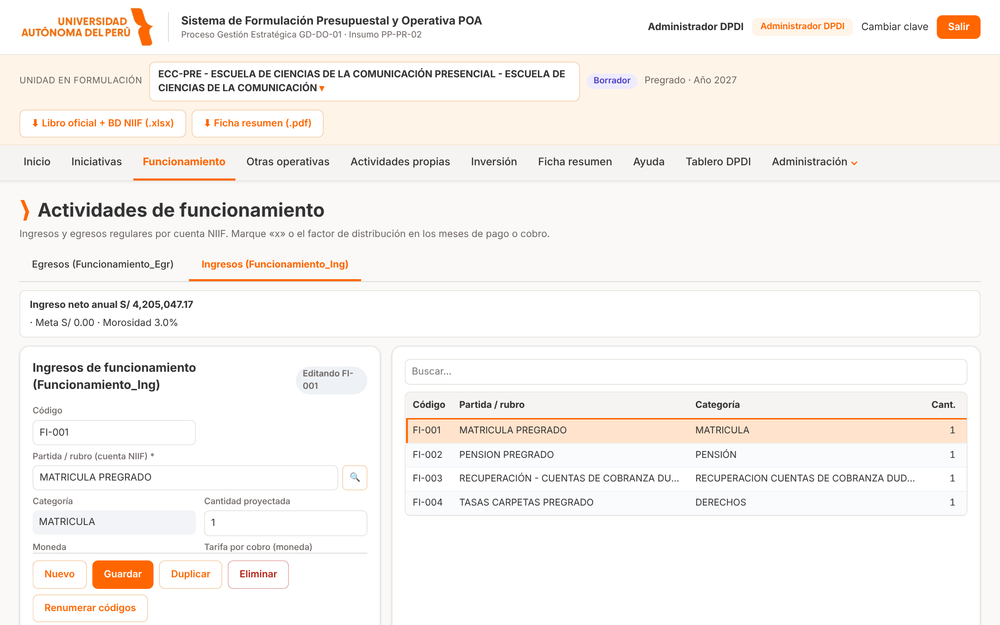
Si en un ingreso marca ¿Aplica morosidad? = Sí, el sistema proyecta su cobranza con los rangos que define la DPDI:
| Rango | Días de atraso | Efecto |
|---|---|---|
| Morosidad temprana | 0 a 30 | Esa parte se cobra el mes siguiente. No reduce el ingreso del año. |
| Morosidad intermedia | 31 a 180 | Esa parte se cobra meses después (4 por defecto). Lo que pasa de diciembre queda por cobrar el año siguiente. |
| Morosidad dura o incobrable | más de 180 | No se cobra: se registra como provisión (gasto) en la cuenta «Cuentas por cobrar comerciales – terceros». |
El formulario muestra, además del ingreso devengado, la cobranza en el año, lo que queda por cobrar el año siguiente y el incobrable que pasa a la provisión. Las tasas de cada rango las fija la DPDI; la unidad solo indica si el ingreso aplica morosidad.
0.08333333 (1/12) en cada mes reparte el coste total en partes iguales durante el año. En ingresos y egresos puede
escribir x en un mes para marcarlo como mes completo de cobro o pago, o un factor (por ejemplo 0.5).Actividades de operación que no son iniciativas estratégicas (licencias de software, mantenimiento, eventos institucionales recurrentes, etc.). El registro es igual al de iniciativas: maestro (nombre, categoría, responsable) y detalle de partidas con distribución mensual y sustento.
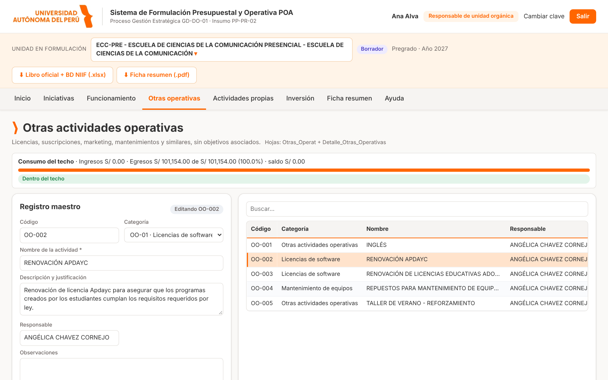
Actividades que deben autofinanciarse (cursos, diplomados, eventos con inscripción). En el detalle registre tanto los ingresos como los egresos; la tabla maestra muestra el resultado (superávit o déficit). Indique el tipo y el mes de ejecución: la directriz AP-02 lo exige.
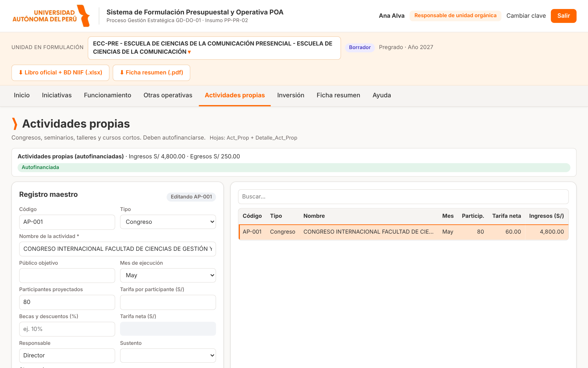
Proyectos de inversión de la unidad (equipamiento, infraestructura, tecnología). En el maestro registre el tipo, el proyecto y si adjunta la ficha de sustento; en el detalle, los bienes o servicios con su cantidad, costo y meses.
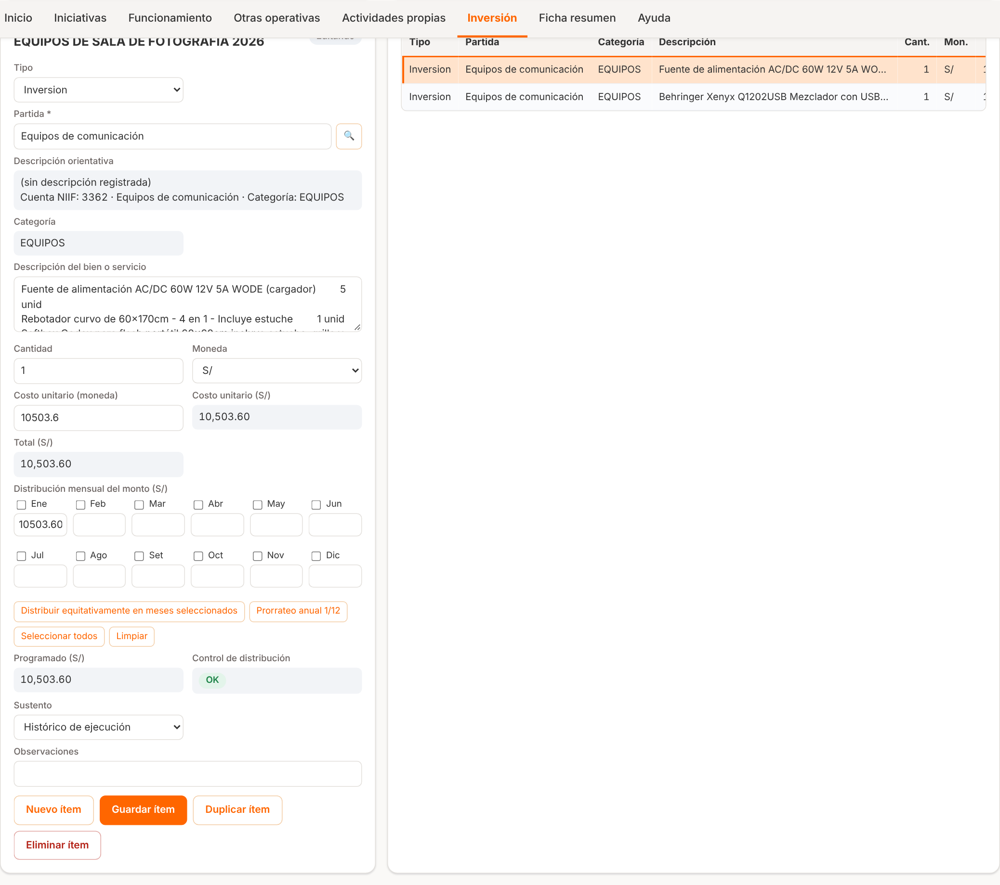
La Ficha resumen reproduce las 12 secciones de la hoja Ficha_Resumen del formato oficial y se actualiza al instante con lo registrado. En la parte superior se muestra el semáforo de directrices: cada directriz indica «Cumple» o «Revisar» y la lista de registros que debe corregir.
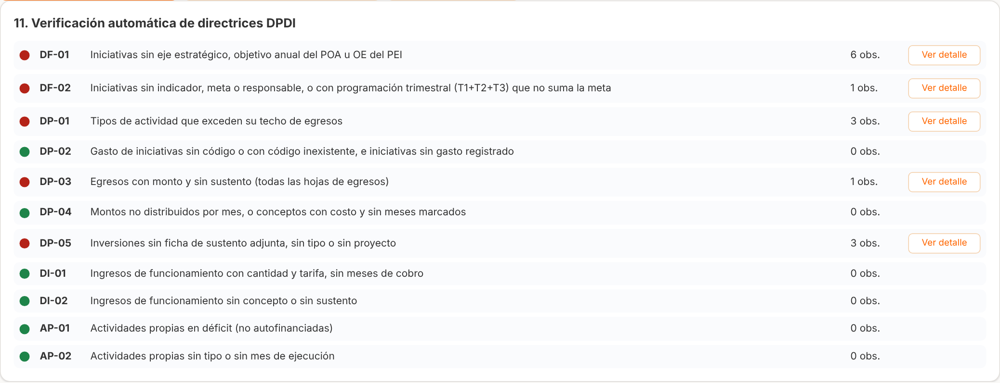
| Código | Qué controla | Cómo corregirlo |
|---|---|---|
| DF-01 | Iniciativas sin eje, objetivo anual POA u OE. | Edite la iniciativa y elija eje y objetivo; el OE se completa solo. |
| DF-02 | Iniciativas sin indicador, meta o responsable, o con T1+T2+T3 distinto de la meta. | Complete los campos y ajuste los trimestres hasta que Control diga «OK». |
| DP-01 | Tipos de actividad que exceden su techo de egresos. | Reduzca montos o solicite a la DPDI la revisión del techo. |
| DP-02 | Gasto sin iniciativa válida o iniciativas sin gasto. | Registre el detalle de partidas o elimine la iniciativa vacía. |
| DP-03 | Egresos con monto y sin sustento. | Escriba el sustento en cada línea de detalle. |
| DP-04 | Montos no distribuidos por mes, o meses sin monto. | Complete la distribución mensual hasta que el control sea «OK». |
| DP-05 | Inversiones sin ficha de sustento, tipo o proyecto. | Complete el maestro de la inversión. |
| DI-01 | Ingresos con cantidad y tarifa, sin meses de cobro. | Indique los meses de cobro en Funcionamiento – ingresos. |
| DI-02 | Ingresos sin concepto o sin sustento. | Complete concepto y sustento. |
| AP-01 | Actividades propias en déficit. | Ajuste ingresos o egresos hasta que la actividad se autofinancie. |
| AP-02 | Actividades propias sin tipo o sin mes de ejecución. | Complete tipo y mes en el maestro. |
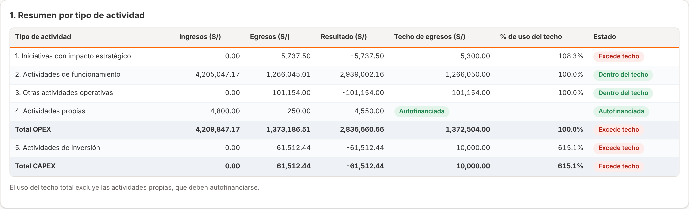
La sección 2.1 Morosidad y cobranza proyectada muestra mes a mes el ingreso devengado, el cobro oportuno, los recuperos de la morosidad temprana e intermedia, la cobranza total y el incobrable. Se cumple: devengado = cobranza + por cobrar el año siguiente + incobrable.
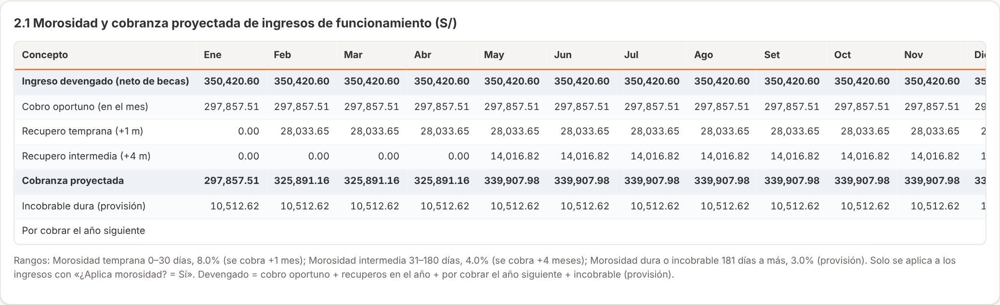
| Estado | Significado | ¿Puede editar? |
|---|---|---|
| Borrador | En elaboración por la unidad. | Sí |
| Enviada | Enviada a la DPDI, pendiente de revisión. | No (solo lectura) |
| Observada | La DPDI devolvió la ficha con una observación. | Sí: corrija y vuelva a enviar |
| Aprobada | Ficha aprobada por la DPDI. | No |
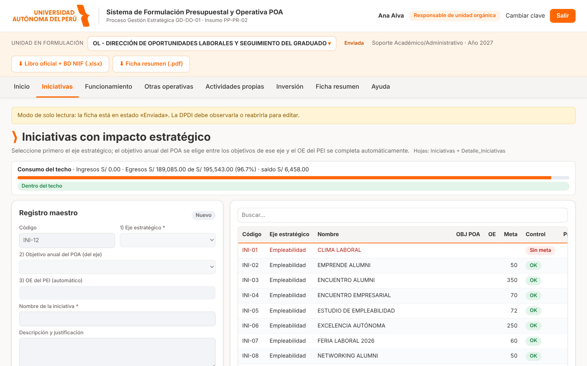
Si su unidad ya avanzó la formulación en el archivo oficial, puede cargarlo en Inicio → Importar Ficha Excel:
seleccione el archivo .xlsx y pulse Importar. El sistema reemplaza los registros del año de la unidad con los
del archivo y muestra cuántas filas cargó por hoja y los avisos encontrados.
| Situación | Qué hacer |
|---|---|
| «No se puede acceder al sitio» | Verifique que está en la red de la universidad y que escribió bien la dirección. Si persiste, comuníquese con Tecnología. |
| «Usuario o clave incorrectos» | Revise mayúsculas y minúsculas. Tras 5 intentos fallidos espere 15 minutos o pida a la DPDI restablecer la clave. |
| Olvidé mi clave | Solicite a la DPDI una clave temporal; al ingresar se le pedirá cambiarla. |
| No veo mi unidad | Su usuario no tiene la unidad asignada. Pida a la DPDI que la agregue a su cuenta. |
| Los botones Guardar están deshabilitados | La ficha está Enviada o Aprobada (solo lectura) o su rol es Consulta. |
| La sesión expiró / «sesión vencida» | Vuelva a ingresar. Los datos guardados no se pierden; lo no guardado sí. |
| El OE no aparece | Primero elija el eje y luego el objetivo anual del POA; el OE se completa al guardar. |
| El control mensual no da «OK» | En los detalles, la suma de los montos mensuales debe ser igual al total de la línea. Revise decimales y meses vacíos. |
| Dos personas editan la misma unidad | Es posible, pero coordinen: si ambos editan la misma fila, prevalece el último en guardar. |
| Término | Definición |
|---|---|
| POA | Plan Operativo Anual. |
| PEI / OE | Plan Estratégico Institucional / Objetivo Estratégico del PEI. |
| DPDI | Dirección de Planeamiento y Desarrollo Institucional. |
| Techo presupuestal | Monto máximo de egresos asignado a la unidad por tipo de actividad. |
| Partida GG | Partida de gasto del catálogo de la universidad, asociada a una cuenta contable NIIF. |
| NIIF | Normas Internacionales de Información Financiera; la base consolidada clasifica cada monto por cuenta NIIF. |
| Maestro / detalle | Actividad (maestro) y sus líneas de partidas con montos mensuales (detalle). |
Dirección de Planeamiento y Desarrollo Institucional · Sistema POA - DPDI · Manual del usuario v1.0